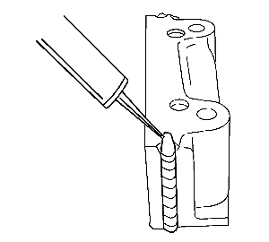
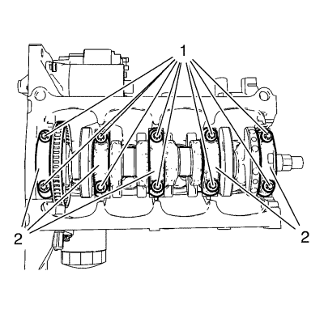
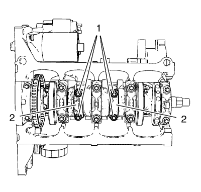
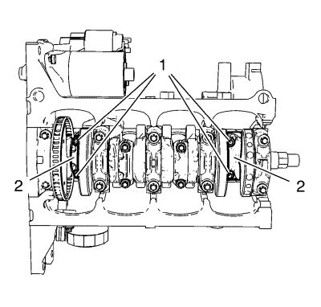

Montaje del cigüeñal y el cojinete
Herramientas especiales
EN-45059 Kit de goniómetro de par de apriete
Si desea informarse sobre herramientas regionales equivalentes. Consulte Herramientas especiales → 1.6L LXT.

Nota: Compruebe la posición de montaje.
- Monte los clips del cojinete del cigüeñal; lubrique los clips con aceite.
- Monte el cigüeñal.
Nota: Compruebe la posición de montaje.
- Monte los sombreretes de cojinete del cigüeñal 1-4.
| • | Lubrique los clips de cojinete con aceite. |
Nota: Compruebe la posición de montaje.
- Monte el sombrerete del cojinete del cigüeñal.
| • | Aplique sellador adhesivo en las ranuras del sombrerete del cojinete trasero del cigüeñal. |
Precaución:Consulte Precaución con las fijaciones en la sección Prólogo.

- Apriete el sombrerete del cojinete del cigüeñal (1).
- Monte los 10 tornillos nuevos y apriételos en 3 veces. Utilice el kit de goniómetro EN-45059.
| • | Primer paso a 50 N·m (37 lib. pie). |

Nota: Compruebe la posición de montaje.
- Monte los sombreretes de los cojinetes de biela 2 y 3 (1) y lubrique los clips de los cojinetes con aceite.
- Apriete en 3 veces los 4 tornillos de sombrerete de cojinete de biela.
| • | Primer paso a 25 N·m (18 lib. pie). |

- Gire el cigüeñal 180°.
Nota: Compruebe la posición de montaje.
- Monte los sombreretes de los cojinetes de biela 1 y 4 (1) y lubrique los clips de los cojinetes con aceite.
- Apriete en 3 veces los 4 tornillos de sombrerete de cojinete de biela. Utilice el kit de goniómetro EN-45059.
| • | Primer paso a 25 N·m (18 lib. pie). |
| © Copyright Chevrolet. All rights reserved |